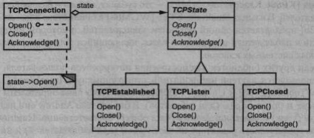
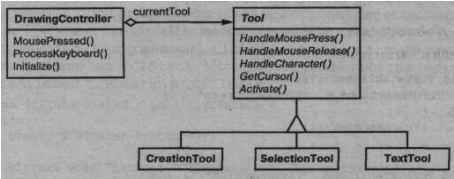

Состояние - паттерн поведения объектов.
Позволяет объекту варьировать свое поведение в зависимости от внутреннего состояния. Извне создается впечатление, что изменился класс объекта.
Рассмотрим класс TCPConnection, с помощью которого представлено сетевое соединение. Объект этого класса может находиться в одном из нескольких состояний: Established (установлено), Listening (прослушивание), Closed(закрыто). Когда объект TCPConnection получает запросы от других объектов, то в зависимости от текущего состояния он отвечает по-разному. Например, ответ на запрос Open (открыть) зависит от того, находится ли соединение в состоянии Closed или Established. Паттерн состояние описывает, каким образом объект TCPConnect ion может вести себя по-разному, находясь в различных состояниях.
Основная идея этого паттерна заключается в том, чтобы ввести абстрактный класс TCPState для представления различных состояний соединения. Этот класс объявляет интерфейс, общий для всех классов, описывающих различные рабочие состояния. В подклассах TCPState реализовано поведение, специфичное для конкретного состояния. Например, в классах TCPEstabli shed и TCPClosed реализовано поведение, характерное для состояний Established и Closed соответственно.
Класс TCPConnect ion хранит у себя объект состояния (экземпляр некоторого подкласса TCPState), представляющий текущее состояние соединения, и делегирует все зависящие от состояния запросы этому объекту. TCPConnection ис- пользует свой экземпляр подкласса TCPState для выполнения операций, свойственных только данному состоянию соединения.
При каждом изменении состояния соединения TCPConnection изменяет свой объект-состояние. Например, когда установленное соединение закрывается, CPConnection заменяет экземпляр класса TCPEstablished экземпляром TCPCIosed.
Используйте паттерн состояние в следующих случаях:
Context (TCPConnection) — контекст:
State (TCPState) — состояние:
Подклассы ConcreteState (TCPEstablished, TCPListen, TCPClosed) — конкретное состояние:
Результаты использования паттерна состояние:
С паттерном состояние связан целый ряд вопросов реализации:
Первый вариант предпочтителен, когда заранее неизвестно, в какие состояния будет попадать система, и контекст изменяет состояние сравнительно редко. При этом мы не создаем объектов, которые никогда не будут использованы, что существенно, если в объектах состояния хранится много информации. Когда изменения состояния происходят часто, поэтому не хотелось бы уничтожать представляющие их объекты (ибо они могут очень скоро понадобиться вновь), следует воспользоваться вторым подходом. Время на создание объектов затрачивается только один раз, в самом начале, а на уничтожение - не затрачивается вовсе. Правда, этот подход может оказать- ся неудобным, так как в контексте должны храниться ссылки на все состояния, в которые система теоретически может попасть;
В следующем примере приведен код на языке C++ с TCP-соединением из раздела «Мотивация». Это упрощенный вариант протокола TCP, в нем, конечно же, представлен не весь протокол и даже не все состояния TCP-соединений.
Прежде всего определим класс TCPConnection, который предоставляет ин- терфейс для передачи данных и обрабатывает запросы на изменение состояния:
class TCPOctetStream; class TCPState; class TCPConnection { public: TCPConnection ( ) ; void ActiveOpen ( ) ; void PassiveOpenO ; void Close ( ) ; void Send() ; void Acknowledge (); void Synchronize (); void ProcessOctet (TCPOctetStream*) ; private: friend class TCPState; void ChangeState (TCPState*); private: TCPState* _state; };
В переменной-члене _state класса TCPConnection хранится экземпляр класса TCPState. Этот класс дублирует интерфейс изменения состояния, опре- деленный в классе TCPConnect ion. Каждая операция TCPState принимает экземп- ляр TCPConnection как параметр, тем самым позволяя объекту TCPState получить доступ к данным объекта TCPConnection и изменить состояние соединения
class TCPState { public: virtual void Transmit(TCPConnection*, TCPOctetStream*); virtual void ActiveOpen(TCPConnection*); virtual void PassiveOpen(TCPConnection*); virtual void Close(TCPConnection*); virtual void Synchronize (TCPConnection*) ; virtual void Acknowledge (TCPConnection*) ; virtual void Send (TCPConnect ion* ); protected: void ChangeState (TCPConnection*, TCPState*); };
TCPConnection делегирует все зависящие от состояния запросы хранимому в _state экземпляру TCPState. Кроме того, в классе TCPConnection существует операция, с помощью которой в эту переменную можно записать указатель на другой объект TCPState. Конструктор класса TCPConnection инициализирует _state указателем на состояние TCPClosed (мы определим его ниже):
TCPConnection: : TCPConnection () { _state = TCPClosed: : Instance () ; } void TCPConnection::ChangeState (TCPState* s) { _state = s; } void TCPConnection::ActiveOpen () { _state->ActiveOpen(this); } void TCPConnection::PassiveOpen () { _state->PassiveOpen(this); } void TCPConnection::Close () { _state->Close(this); } void TCPConnection:Acknowledge () { _state->Acknowledge(this); } void TCPConnection::Synchronize () { _state->Synchronize(this); }
В классе TCPState реализовано поведение по умолчанию для всех делегированных ему запросов. Он может также изменить состояние объекта TCPConnection посредством операции ChangeState. TCPState объявляется другом класса TCPConnection, что дает ему привилегированный доступ к этой операции:
void TCPState::Transmit (TCPConnection*, TCPOctetStream*) { } void TCPState::ActiveOpen (TCPConnection*) { } void TCPState::PassiveOpen (TCPConnection*) { } void TCPState: : Close (TCPConnection*) { } void TCPState: : Synchronize (TCPConnection*) { } void TCPState: :ChangeState (TCPConnection* t, TCPState* s) { t->ChangeState(s) ; }
В подклассах TCPState реализовано поведение, зависящее от состояния. Со- единение TCP может находиться во многих состояниях: Established (установлено), Listening (прослушивание), Closed (закрыто) и т.д., и для каждого из них есть свой подкласс TCPState. Мы подробно рассмотрим три подкласса - TCPEstablished, TCPListen и TCPClosed:
class TCPEstablished : public TCPState { public: static TCPState* Instanced; virtual void Transmit (TCPConnection*, TCPOctetStream*) ; virtual void Close (TCPConnection*) ; }; class TCPListen : public TCPState { public: static TCPState* Instance(); virtual void Send(TCPConnection*); // ... }; class TCPClosed : public TCPState { public: static TCPState* Instanced; virtual void ActiveOpen(TCPConnection*); virtual void PassiveOpen(TCPConnection*); // ... };
В подклассах TCPState нет никакого локального состояния, поэтому их можно разделять, так что потребуется только по одному экземпляру каждого класса. Уникальный экземпляр подкласса TCPState создается обращением к статичес- кой операции Instance.1 В подклассах TCPState реализовано зависящее от состояния поведение для тех запросов, которые допустимы в этом состоянии:
void TCPClosed::ActiveOpen (TCPConnection* t) { // послать SYN, получить SYN, ACK и т.д. ChangeState(t, TCPEstablished::Instanced); }
Таким образом, каждый подкласс TCPState - это одиночка.
void TCPClosed::PassiveOpen (TCPConnection* t) { ChangeState(t, TCPListen::Instance))); } void TCPEstablished::Close (TCPConnection* t) { // послать FIN, получить АСК для FIN ChangeStateft, TCPListen::Instance))) ; } void TCPEstablished::Transmit ( TCPConnection* t, TCPOctetStream* о ) { t->ProcessOctet(o); } void TCPListen::Send (TCPConnection* t) { // послать SYN, получить SYN, АСК и т.д. ChangeStateft, TCPEstablished::Instanced); }
После выполнения специфичных для своего состояния действий эти операции вызывают ChangeState для изменения состояния объекта TCPConnection. У него нет никакой информации о протоколе TCP. Именно подклассы TCPState определяют переходы между состояниями и действия, диктуемые протоколом.
Ральф Джонсон и Джонатан Цвейг [JZ91] характеризуют паттерн состояние и описывают его применительно к протоколу TCP.
Наиболее популярные интерактивные программы рисования предоставляют «инструменты» для выполнения операций прямым манипулированием. Напри- мер, инструмент для рисования линий позволяет пользователю щелкнуть в про- извольной точке мышью, а затем, перемещая мышь, провести из этой точки линию. Инструмент для выбора позволяет выбирать некоторые фигуры. Обычно все имеющиеся инструменты размещаются в палитре. Работа пользователя заключается в том, чтобы выбрать и применить инструмент, но на самом деле поведение редактора варьируется при смене инструмента: посредством инструмента для рисо- вания мы создаем фигуры, при помощи инструмента выбора - выбираем их и т.д. Чтобы отразить зависимость поведения редактора от текущего инструмента, мож- но воспользоваться паттерном состояние.
Можно определить абстрактный класс Tool, подклассы которого реализуют зависящее от инструмента поведение. Графический редактор хранит ссылку на текущий объект Tool и делегирует ему поступающие запросы. При выборе инстру- мента редактор использует другой объект, что приводит к изменению поведения.
Данная техника используется в каркасах графических редакторов HotDraw [Joh92] и Unidraw [VL90]. Она позволяет клиентам легко определять новые виды инструментов. В HotDraw класс DrawingController переадресует запросы текущему объекту Tool. В Unidraw соответствующие классы называются Viewer и Tool. На приведенной ниже диаграмме классов схематично представлены ин- терфейсы классов Tool и DrawingController.
Описанный Джеймсом Коплиеном [Сор92] прием конверт-письмо (EnvelopeLetter) также относится к паттерну состояние. Техника конверт-письмо - это способ изменить класс объекта во время выполнения. Паттерн состояние является частным случаем, в нем акцент делается на работу с объектами, поведение кото- рых зависит от состояния
Паттерн приспособленец подсказывает, как и когда можно разделять объек- ты класса State.
Объекты класса state часто бывают одиночками.